结果可复现
frame(t) 是纯函数，动画里禁用随机数和当前时间。同一份代码跑一百次，第 217 帧仍然逐个像素相同——可以放进 CI 做回归比对，也不会因为模型换了版本，昨天的片子今天就变样。
定位到第 t 秒 → 截一张图 → ffmpeg 编码。第 217 帧每次跑都一模一样，
文字、数字、图表永远不会糊。适合数据动画、字幕卡、界面演示这类以文字为主的片子。
为什么不用文生视频
frame(t) 是纯函数，动画里禁用随机数和当前时间。同一份代码跑一百次，第 217 帧仍然逐个像素相同——可以放进 CI 做回归比对，也不会因为模型换了版本，昨天的片子今天就变样。
抖音 9:16、小红书 3:4、YouTube 16:9 从同一份 HTML 出片。按目标宽高重新渲染而不是裁剪拉伸，不用维护三套代码，也不会有"我发出去的是哪个版本"。
给了 --audio 就可以不写 --duration：视频长度自动对齐音频，短了补、长了裁。省掉那种"录完配音再回头逐场调时间轴"的返工。
同一份 HTML
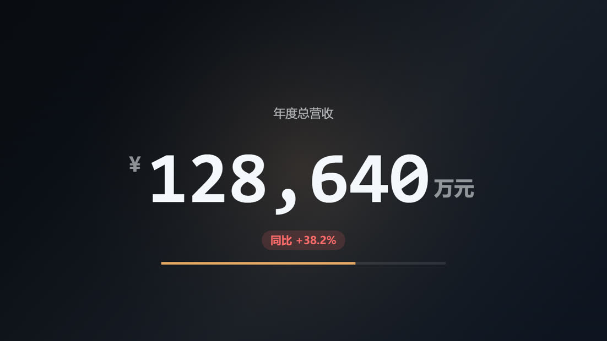
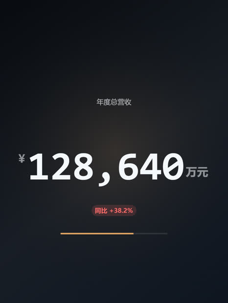
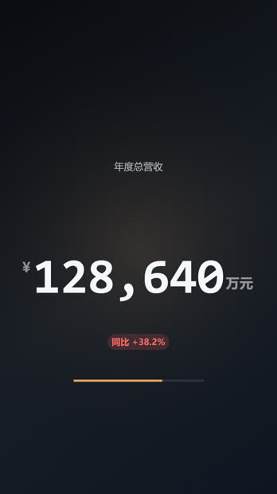
放在一起看
| 本项目 | Remotion | Motion Canvas | 文生视频模型 | |
|---|---|---|---|---|
| 文字 / 数字准确 | 逐帧一致 | 准确 | 准确 | 经常拼错 |
| 可复现 | 可逐像素比对 | 可 | 可 | 不可 |
| 上手成本 | 一份 HTML + 一条命令 | React 工程 + 打包 | 需学一套编排框架 | 写提示词 |
| 多平台尺寸 | 一条命令多档 | 自行配置 | 自行配置 | 重新生成 |
| 时长跟随配音 | 内置 | 需写代码 | 需写代码 | 多为固定几秒 |
| 透明通道 | ProRes 4444 | 支持 | — | 不支持 |
| 成本 | 本地 CPU，无额度 | 本地 / 云 | 本地 | 按次计费 |
14 个开箱模板 · 12 种风格
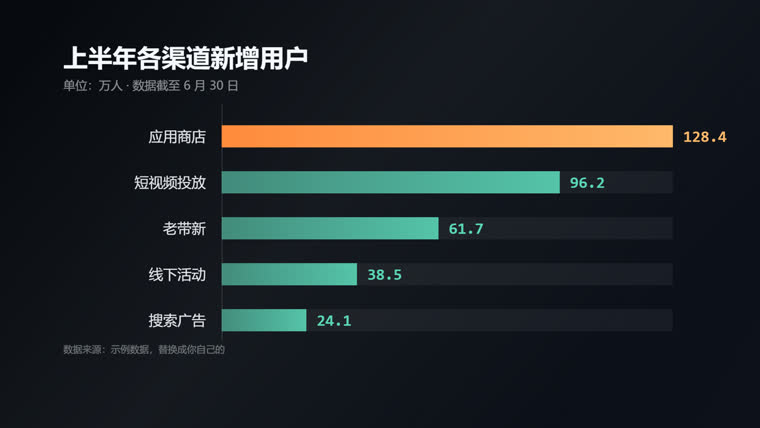
bar-chart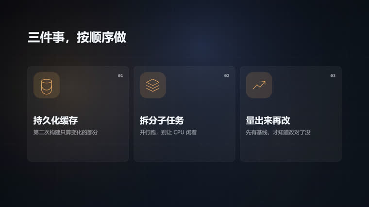
explainer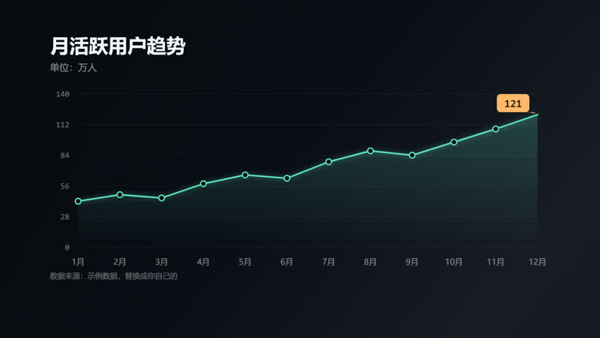
line-chart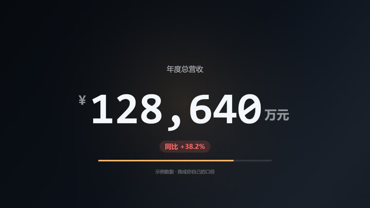
number-counter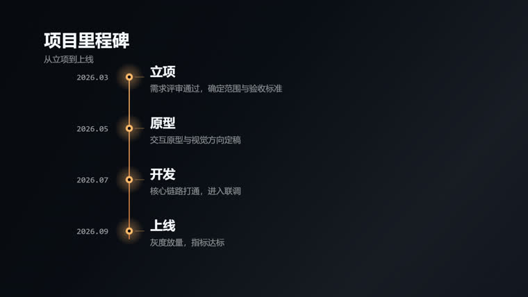
timeline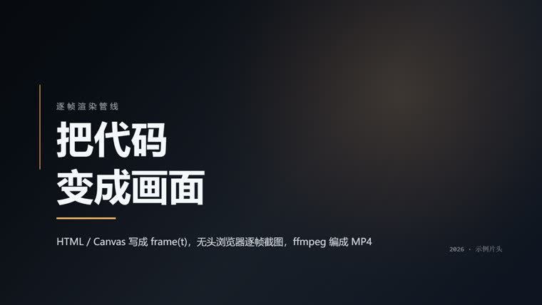
title-card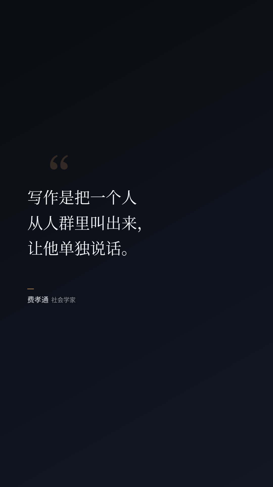
quote-card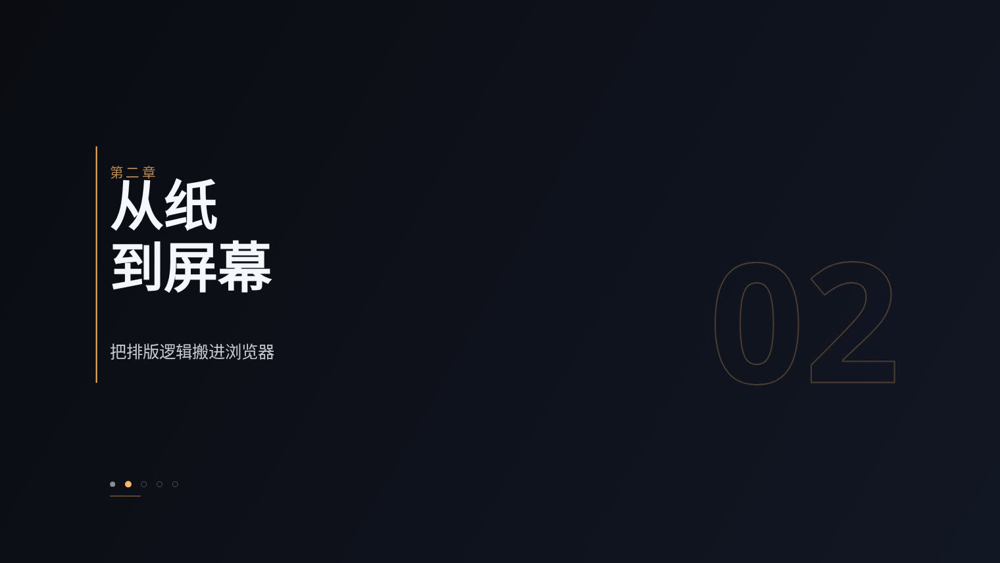
chapter-card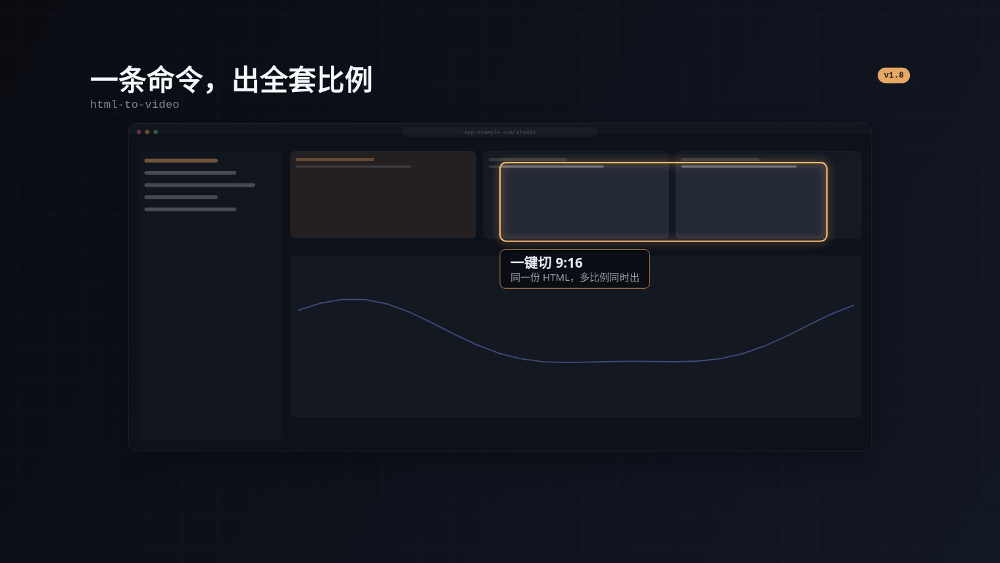
ui-showcase
另有 compare、flow-steps、subtitle-card、vertical-card、vertical-subtitle 五个模板，共 14 个；
每个模板都能叠加 --theme 的 12 种风格。演示 GIF 都在
docs/ 下。
快速开始
# 1. 拿到代码 git clone https://github.com/wx4766/html-to-video cd html-to-video npm install # 2. 渲一个自带模板 node scripts/render-video-seek.js \ docs/demo-hero.html --duration=10 --fps=60
# 一稿多发 node scripts/render-video-seek.js demo.html \ --presets=douyin,xiaohongshu,youtube --out demo # 时长跟着配音走 node scripts/render-video-seek.js demo.html \ --audio voice.mp3 --out demo.mp4 # 给 Agent 读的结构化输出 node scripts/render-video-seek.js demo.html \ --duration=6 --json